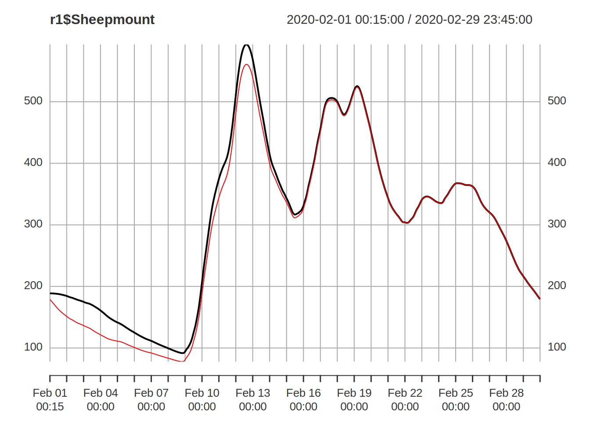

Running a Simulation
Aim
To simulate a Dynamic TOPMODEL of the Eden catchment, visualise the output showing how the show how the parameters may be altered.
Required R packages
This exercise builds upon the early model creation, using the outputs generated during that exercise.
The packages used can be attached with
library("dynatop")
library("terra")
library("xts")and remember to move to the eden_data directory e.g.
setwd("./eden_data")A Simulation
The minimum data need to perform a simulation with dynatop is a
model, such as that output by dynatopGIS in the previous section and observed data
in the format introduced earlier.
Load the previously created data
mdl <- readRDS(file.path(".","dyna","atb_20_model.rds"))
output_defn <- readRDS(file.path(".","dyna","gauge_output_defn.rds"))
obs <- readRDS(file.path(".","processed","obs.rds"))A dynatop object is initialised by loading the model
hru <- mdl$hru
ctch_mdl <- dynatop$new(hru)This step performs some basic checks on the model for consistency. The data can then be added; again simple checks are performed.
ctch_mdl$add_data(obs)The initial states of the HRUs can be specified in the model object. If, as in the case of this example, the states are not specified then any attempt to perform a simulation will fail.
## expect a failure
ctch_mdl$sim(output_defn)
#> Error in ctch_mdl$sim(output_defn): Model states have non-finite valuesThe states need to be initialised using the initialise method. This presumes:
- The surface is dry
- The root zone is partially full (the s_rz0 parameter)
- There is a specified (see below) recharge rate representing the flow from the unsaturated to saturated zone
- the saturated zone is at a steady state
- the unsaturated zone storage ensures that the recharge rate from the unsaturated zone to the saturated zone is as close to the maximum as possible
The maximum recharge rate and fraction of root zone storage full for each HRU forms part of its definition.
hru[[1000]]$initialisation
#> s_rz_0 r_uz_sz_0
#> 7.5e-01 1.0e-07
## s_rz_0 - fraction of root zone full
## r_us_sz_0 - recharge unsaturated to saturated zone in m/s andA simple way of getting an initial estimate of the recharge is to divide the observed discharge at the outlet of the catchment for the first time step by the catchment area. This works best if the first time step has no rainfall and is close to base-flow.
## determining the initial recharge rate ad setting it in the model
r0 <- as.numeric(obs$Sheepmount_obs[1]) / sum( sapply( hru, function(x){x$properties["area"]} ) )
hru <- lapply(hru,function(h){h$initialisation["r_uz_sz_0"] <- r0;h})In the following we initialise the states and then perform the simulation, using the chaining of commands.
## the map input is only needed for visualisation
ctch_mdl <- dynatop$new(hru,map=mdl$map)$add_data(obs)$initialise()$sim(output_defn)Mass balance
It is possible to output the mass balance for each time step of the
simulation using the get_mass_errors method. The returns an
xts object giving the volumes in the hill-slope states at
the start and end of the time step along with the other fluxes as
volumes. This can easily be used to plot the errors as shown below.
mb <- ctch_mdl$get_mass_errors()
head(mb)
#> initial_state p e_t outflow final_state
#> 2020-02-01 00:15:00 -198322986 636.1126 0 170462.6 -198492812
#> 2020-02-01 00:30:00 -198492812 636.1126 0 170455.0 -198662631
#> 2020-02-01 00:45:00 -198662631 6385.7957 0 170447.6 -198826693
#> 2020-02-01 01:00:00 -198826693 6385.7957 0 170440.0 -198990747
#> 2020-02-01 01:15:00 -198990747 2140.9939 0 170432.2 -199159038
#> 2020-02-01 01:30:00 -199159038 2140.9939 0 170423.9 -199327321
#> error
#> 2020-02-01 00:15:00 -6.854534e-07
#> 2020-02-01 00:30:00 7.748604e-07
#> 2020-02-01 00:45:00 2.980232e-08
#> 2020-02-01 01:00:00 -1.400709e-06
#> 2020-02-01 01:15:00 3.278255e-07
#> 2020-02-01 01:30:00 -5.960464e-08
plot( mb$err , main="Mass balance error",ylab="m^3")
Visualisations
After a simulation it is possible to get or plot output. Two types of output are available:
- the time series variable specified in the
output_defnused in the simulation - the states of the system at end of the simulation
Both have methods for plotting the data or returning in as a variable as shown in the following
Gauge flows
## For simulated flows at the gauge sites
sim_gauge <- ctch_mdl$get_output() ## extract the flow as an xts object
head(sim_gauge)
#> Bampton Grange Burnbanks Coal Burn Cummersdale Dacre Bridge
#> 2020-02-01 00:15:00 4.928123 2.817783 0.1227015 21.63214 2.836557
#> 2020-02-01 00:30:00 4.926602 2.820096 0.1197231 21.62889 2.836551
#> 2020-02-01 00:45:00 4.925192 2.818703 0.1173275 21.62742 2.834431
#> 2020-02-01 01:00:00 4.922987 2.815001 0.1156495 21.62710 2.830495
#> 2020-02-01 01:15:00 4.919994 2.810062 0.1145420 21.62684 2.825530
#> 2020-02-01 01:30:00 4.916647 2.804287 0.1138176 21.62577 2.820491
#> Eamont Bridge Great Corby Greenholme Harraby Green
#> 2020-02-01 00:15:00 12.89632 110.4597 27.29113 14.33129
#> 2020-02-01 00:30:00 12.89247 110.4585 27.28848 14.32870
#> 2020-02-01 00:45:00 12.88853 110.4571 27.28491 14.32500
#> 2020-02-01 01:00:00 12.88497 110.4544 27.28030 14.32131
#> 2020-02-01 01:15:00 12.88187 110.4509 27.27486 14.31959
#> 2020-02-01 01:30:00 12.87922 110.4471 27.26884 14.32002
#> Hynam Bridge Kirkby Stephen Newbiggin Bridge
#> 2020-02-01 00:15:00 3.547355 5.248447 13.54109
#> 2020-02-01 00:30:00 3.546882 5.245908 13.54321
#> 2020-02-01 00:45:00 3.544828 5.242319 13.54446
#> 2020-02-01 01:00:00 3.541144 5.238129 13.54532
#> 2020-02-01 01:15:00 3.536149 5.233599 13.54379
#> 2020-02-01 01:30:00 3.530388 5.228567 13.53925
#> Pooley Bridge Upstream Sheepmount Stockdalewath
#> 2020-02-01 00:15:00 12.22210 188.7329 5.477744
#> 2020-02-01 00:30:00 12.22039 188.7357 5.475740
#> 2020-02-01 00:45:00 12.21934 188.7366 5.471281
#> 2020-02-01 01:00:00 12.21803 188.7354 5.466385
#> 2020-02-01 01:15:00 12.21524 188.7327 5.462073
#> 2020-02-01 01:30:00 12.21039 188.7281 5.458081
#> Temple Sowerby Udford
#> 2020-02-01 00:15:00 47.70087 32.90629
#> 2020-02-01 00:30:00 47.69905 32.90238
#> 2020-02-01 00:45:00 47.69883 32.89939
#> 2020-02-01 01:00:00 47.69882 32.89724
#> 2020-02-01 01:15:00 47.69792 32.89562
#> 2020-02-01 01:30:00 47.69570 32.89389
## Plot the simulated flows at the gauges
ctch_mdl$plot_output()
The observed gauge data is readily added and plotted
plot( merge(obs$Sheepmount_obs,sim_gauge),main="Simulated and observed flows",
legend.loc='topright')
Current States
The current states of the model can be extracted and plotted.
## extract the current states as a data.frame
current_state <- ctch_mdl$get_states()
## columns correspond to the Hill-slope HRU ID, and the storage's in each of the four zones
head(current_state)
#> id s_sf s_rz s_uz s_sz
#> 1 0 0.0002079108 0.1 0 0
#> 2 1 9.9896233896 0.1 0 0
#> 3 2 0.0004973038 0.1 0 0
#> 4 3 0.0036077856 0.1 0 0
#> 5 4 0.0036269050 0.1 0 0
#> 6 5 0.5555132189 0.1 0 0
## a single state can be plotted at one time
ctch_mdl$plot_state("s_sz")
Changing Parameters
The parameters are stored within the HRU descriptions; particularly
the sf, rz, uz and
sz elements. Each of these contains a type
variable and corresponding named vector of parameters. The various types
and parameters for each zone are described in the (dynatop
vignettes)[https://waternumbers.github.io/dynatop/articles/HRU.html#surface-zone-representations].
The most straight forward way for altering the parameters is two write a function that acts on each HRU, altering the parameters with reference to the properties of the HRU. The following presents a simple function of setting a faster surface velocity and kinematic solution for the river channels.
fpar <- function(h){ ## h is the hru
## test if a channel
if( !is.na(h$class$startNode) ){
## change type
h$sf$type <- "kin"
h$sf$param["c_sf"] <- 1
}
h
}Channel Inflow
To use dyantop to drive a hydraulic model the inflow
from the subsurface and hillslope HRUs to the surface zone of each
channel HRU may need to be computed. The first term is (directly
available )[https://waternumbers.github.io/dynatop/articles/The_Model_Object.html#output_flux],
though will the wrong sign and as a volume. Start by working out the id
of each channel HRU
chn_id <- do.call(c, lapply( hru, function(h){ if(!is.na(h$class$startNode)){ h$id } }))Next start creating an output definition for the flux from root zone
out_hyd <- data.frame( name = paste0("hyd_",chn_id),
id = chn_id,
flux = "v_sf_rz", scale =-1/900) # scale is negative since flux usually downwards, 1/900 is 1/timestepNext we will construct the inflow from HRUs representing hillslopes and add these to the data frame above.
## function to compute the relevent part so the output definition for each potential source HRU
fout <- function(h){
## test if it is a channel HRU - in which case return NULL
if( !is.na(h$class$startNode) ){ return(NULL) }
## index of flow directiuons going to other channels
idx <- h$sf_flow_direction$id %in% chn_id
if(!any(idx)){ return(NULL) } ## quit if no links!
## create partial output defn
data.frame(
name = paste0("hyd_",h$sf_flow_direction$id[idx]), ## which inflow does it alter
id = h$id, ## flux comes from this HRU
flux = "q_sf", # surface flux out of this HRU is input to the next
scale = h$sf_flow_direction$fraction[idx] # scale is fraction of flow (since taking it away)
)
}
## row bind to give a data.frame
tmp <- do.call( rbind, lapply( hru, fout) )
## row bind onto the intial data frame
out_hyd <- rbind( out_hyd, tmp )
## sort this, not needed but easier to look at
out_hyd <- out_hyd[ order(out_hyd$name), ]In the resulting output definition multiple fluxes contribute to the same output series, combined by a summation weighted by the scale value. Simulation and visualisation work as before.
ctch_mdl <- dynatop$new(hru)$add_data(obs)$initialise()$sim(out_hyd)
plot( ctch_mdl$get_output()[,1:10])Extracting Intermediate States
Unless requested dynatop keeps only the final state
during a simulation. To request that states are other time steps are
kept a vector of times must be passed in the call to the
sim method.
## Let us repeat the same simulation
## keeping the states for every other time step
keep_times <- index(obs)[seq(2,nrow(obs),by=96)] ## an vector of time steps
ctch_mdl$initialise()$sim(output_defn,keep_states=keep_times) ## passing the vector of time steps to the callThe record of the states can know be extracted. While there is an entry for every time step only those request will be populated
## extract the record of the states at each time step
state_rec <- ctch_mdl$get_states(record=TRUE) ## returns the whole record of states
head(names(state_rec)) ## the elements in state_rec are named after the time
#> [1] "2020-02-01 00:15:00" "2020-02-01 00:30:00" "2020-02-01 00:45:00"
#> [4] "2020-02-01 01:00:00" "2020-02-01 01:15:00" "2020-02-01 01:30:00"
head(sapply(state_rec,length)) ## those in keep_times are populated the remainder are empty
#> 2020-02-01 00:15:00 2020-02-01 00:30:00 2020-02-01 00:45:00 2020-02-01 01:00:00
#> 0 5322 0 0
#> 2020-02-01 01:15:00 2020-02-01 01:30:00
#> 0 0The visualisation of the state record is possible either as a time series
## Create a time series plot of the saturated zone deficit
s_sz_rec <- state_rec[ sapply(state_rec,length)>0 ]
s_sz_rec <- lapply(s_sz_rec, function(x){ setNames( sapply(x,function(z){z$states["s_sz"]}), sapply(x,function(z){z$id}) )} )
s_sz_rec <- do.call(rbind,s_sz_rec) ## bind to make matrix
s_sz_rec <- as.xts(s_sz_rec) ## convert to and xts object using the rownames as times
## for a the Hill-slope HRUs with IDs 2487, 3598 and 5201 the start of the time series are
head(s_sz_rec[,c("2487","3598","5201")])
#> 2487 3598 5201
#> 2020-02-01 00:30:00 0 0.1312262 0.2608164
#> 2020-02-02 00:30:00 0 0.1378564 0.2668815
#> 2020-02-03 00:30:00 0 0.1405102 0.2691382
#> 2020-02-04 00:30:00 0 0.1453311 0.2742745
#> 2020-02-05 00:30:00 0 0.1495449 0.2785347
#> 2020-02-06 00:30:00 0 0.1539169 0.2828957
## and a plot can be generated
plot(s_sz_rec[,c("2487","3598","5201")],main="Saturated zone deficit for select HRU",legend.loc="topright")or as a map
## Create a map of the root zone storage at 2020-02-03 02:00:00
s_rz_val <- do.call(rbind, lapply( state_rec[["2020-02-03 00:30:00"]], function(x){ data.frame(id=x$id,s_rz = x$states["s_rz"]) }) )
## create a map of values by substituting s_rz for the id in the hru_id map
hru_id <- rast( file.path(".","dyna","atb_20_model.tif") ) ## open map from from file names stored in the model
s_rz_map<- subst(hru_id, from=s_rz_val$id, to = s_rz_val$s_rz) ## substitute values into the map of HRU id numbers
## and plot
plot(s_rz_map,main="Root zone storage at 2020-02-03 00:30:00")
Hot Starting and Saving
Hot starting; that is starting a simulation with the final states of a previous simulation can be achieved by simply not re-initialising the dynatop object before the next call to sim
## initialise and simulate the model
ctch_mdl$initialise()$sim(output_defn)
r1 <- ctch_mdl$get_output() ## get the output from the first run
## run again without initialising
## This will use the final states of the last simulation as the starting states
ctch_mdl$sim(output_defn)
r2 <- ctch_mdl$get_output() ## get the output from the second
plot(r1$Sheepmount)lines(r2$Sheepmount,col="red")## different state values after the second run
If you want to save the model and current states at the end of a simulation do not save the dynatop object. Instead extract and save he model including the current states and save that.
new_mdl <- ctch_mdl$get_model() ## get the model structure from the dynatop object
new_mdl[[1]] ## as the original model but will final states included
#> $id
#> [1] 0
#>
#> $states
#> s_sf s_rz s_uz s_sz
#> 0.0002078958 0.1000000000 0.0000000000 0.0000000000
#>
#> $properties
#> area width Dx gradient
#> 1.1e+05 2.0e+00 8.4e+02 1.0e-03
#>
#> $sf
#> $sf$type
#> cnst
#> 1
#>
#> $sf$parameters
#> c_sf d_sf s_raf t_raf
#> 0.3 0.0 0.0 999.9
#>
#>
#> $rz
#> $rz$type
#> orig
#> 1
#>
#> $rz$parameters
#> s_rzmax
#> 0.1
#>
#>
#> $uz
#> $uz$type
#> orig
#> 1
#>
#> $uz$parameters
#> t_d
#> 28800
#>
#>
#> $sz
#> $sz$type
#> exp
#> 1
#>
#> $sz$parameters
#> t_0 m
#> 0.135 0.040
#>
#>
#> $sf_flow_direction
#> $sf_flow_direction$id
#> integer(0)
#>
#> $sf_flow_direction$fraction
#> numeric(0)
#>
#>
#> $sz_flow_direction
#> $sz_flow_direction$id
#> integer(0)
#>
#> $sz_flow_direction$fraction
#> numeric(0)
#>
#>
#> $initialisation
#> s_rz_0 r_uz_sz_0
#> 7.500000e-01 8.322539e-08
#>
#> $precip
#> $precip$name
#> [1] "precip_76" "precip_75"
#>
#> $precip$fraction
#> [1] 0.90909091 0.09090909
#>
#> $precip$idx
#> precip_76 precip_75
#> 76 75
#>
#>
#> $pet
#> $pet$name
#> [1] "pet"
#>
#> $pet$fraction
#> [1] 1
#>
#> $pet$idx
#> pet
#> 100
#>
#>
#> $class
#> $class$min_dst
#> [1] 1
#>
#> $class$atb_20_band
#> [1] NA
#>
#> $class$atb_20
#> [1] NA
#>
#> $class$band
#> [1] NA
#>
#> $class$burns
#> [1] NA
#>
#> $class$name1
#> [1] "Boundary Sike"
#>
#> $class$name
#> [1] "429B7DBF-B913-4B3B-8001-4A697CFBA416"
#>
#> $class$startNode
#> [1] "4FA23A32-772E-4B51-873C-0C033989B20A"
#>
#> $class$endNode
#> [1] "02E2B2F3-5087-48DD-A7E9-41F9B5C7969A"
#>
#> $class$form
#> [1] "inlandRiver"
#>
#> $class$flow
#> [1] "in direction"
#>
#> $class$fictitious
#> [1] "false"
#>
#> $class$length
#> [1] 840
#>
#> $class$name2
#> [1] NA
#>
#> $class$width
#> [1] 2
#>
#> $class$area
#> [1] 1684.048
#>
#> $class$slope
#> [1] 0.001
#>
#> $class$up_area
#> [1] 392924.2
#>
#> $class$ct_area
#> [1] 392924.2